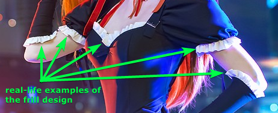
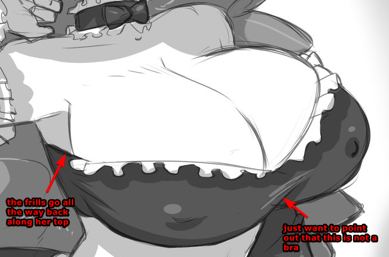
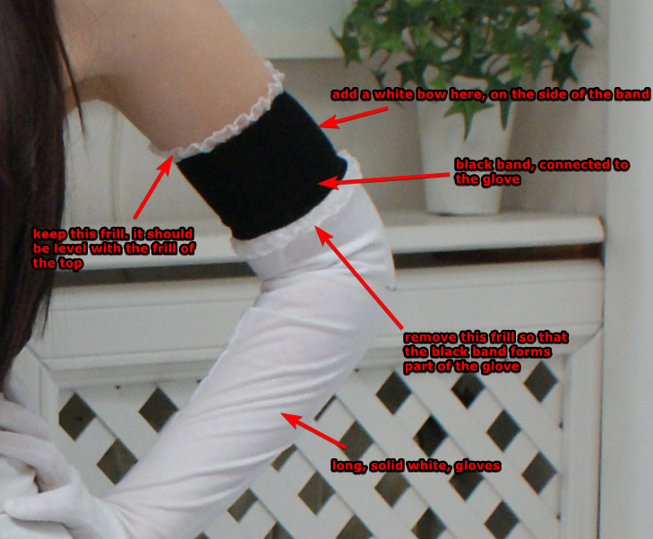
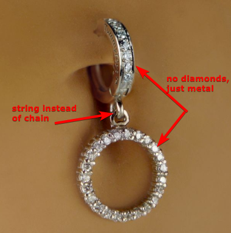
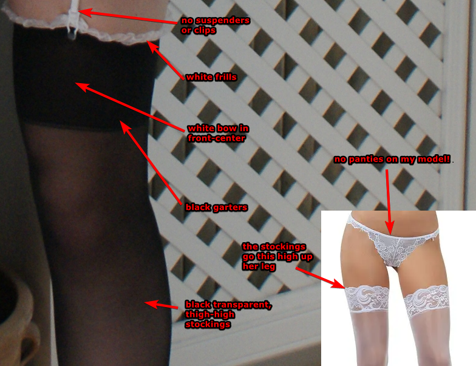
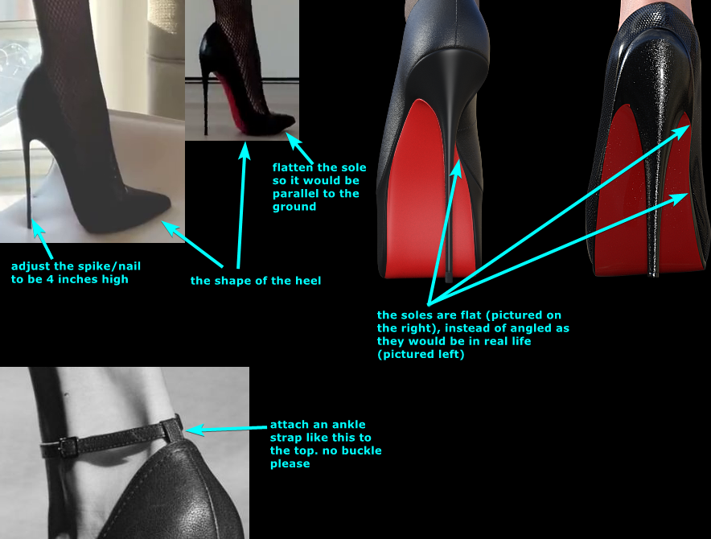

Image References & Description
The character, is supposed to be a French Maid. A vore character with... quite a few morphs, for use in Unity game engine.
References of cloths / body / face / hair.
Clothes
- Her clothes never tear when morphing.
- My character wears no panties.
- If an image preview is too small, click the image to open it in a new tab.
ALL FRILLS LOOK LIKE THIS (click to open)
Choker (click to open)

A black choker with white frill at the top (CHOKER) and a metallic turn-able dial (DIAL) in the middle at the front (DIAL_PLACEMENT).
Top (click to open)
A black low-cut top with white frill at the top (TOP), which covers little skin below the boobs.
Gloves (click to open)
Solid white long gloves, with a black band as thick as the choker at the end and with white frills at the top (GLOVES). There is a white bow in the middle and on the side of the black band. The frills are level with the frills of the top.
Belly-ring (click to open)
A metallic belly-ring (BELLY RING), which can be pulled outward like a pull-string on a toy (like the string of Woody from Toy Story).
Skirt (click to open)


A black low-cut skirt which manages to cover enough from the front and sides, and almost everything from her behind. A white belt on the skirt and white apron with frill attached to the belt (SKIRT + APRON). A bigger white bow on the back of the belt (SKIRT BACK).
Stockings (click to open)
Black stockings with black garter bands (thicker than choker), with white frill at the top, and white bows on the garter at the front (SOCKS)
Heels (click to open)
Black fetish heels, at 4 inches high, with red, slightly wider under-soles and an ankle strap as thick as the choker - the reference picture HEELS describes all this better, but they are 4 inches high.
Body
- Her base form / size with no morphs is very slim.
- The model used for reference is named Daisy Lea if you'd like to search for more / better reference images of her.
- No, I actually don't like really slim women like her (Daisy Lea), but I want to give my character growth / progression via morphs.
- My character would be rather short in real life, being only 5 feet 2 inches tall (157.48 cm) without heels on.
Front (click to open)

Back (click to open)

Face
- The character's face is to be modelled after Irina Dreyt (they have an instagram).
- No nose / mouth piercings, or moles.
Pictures (click to open)


Hair
Basically short (shoulder length), & straight.